“One scientific epoch ended and another began with James Clerk Maxwell” – Albert Einstein
Learning Objectives
,
We see the world around us through light. Light from the Sun is one of the sources of energy without which human beings cannot survive in this planet. Light plays crucial role in understanding the structure and properties of various things from atom to universe. Without light, even our eyes cannot see objects. What is light? This puzzle made many physicists sleepless until middle of 19th century. Earlier, many scientists thought that optics and electromagnetism are two different branches of physics. But from the work of James Clerk Maxwell, who actually enlightened the concept of light from his theoretical prediction that light is an electromagnetic wave which moves with the speed equal to 3 into 10 power 8 m s power minus 1 (in free space or vacuum). Later, it was confirmed that visible light is just only small portion of electromagnetic spectrum, which ranges from gamma rays to radio waves.
In unit 4, we studied that time varying magnetic field produces an electric field (Faraday’s law of electromagnetic induction). Maxwell strongly believed that nature must possess symmetry and he asked the following question, “when the time varying magnetic field produces an electric field, why not the time varying electric field produce a magnetic field?”
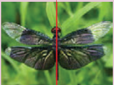
Later he proved that it is indeed true. In 1888, H. Hertz experimentally verified Maxwell’s prediction and hence, this understanding resulted in new technological invention, especially in wireless communication, LASER (Light Amplification by Stimulated Emission of Radiation) technology, RADAR (Radio Detection And Ranging) etc.
In today's digital world, cell phones (Figure 5 point 2 (a)) have greater influence in our day to day life. It is a faster and more effective mode of transferring information from one place to another. It works on the basis that light is an electromagnetic wave. In hospitals, the location of bone fracture can be detected using X-rays as shown in Figure 5 point 2 (b), which is also an electromagnetic wave. For cooking microwave oven is used. The microwave is also an electromagnetic wave. There are plenty of applications of electromagnetic waves in engineering, medicine (example LASER surgery, excetra), defence (example, RADAR signals) and also in fundamental scientific research. In this unit, basics of electromagnetic waves are discussed.
Induced magnetic field
Faraday’s law of electromagnetic induction states that the change in magnetic field produces an electric field. Mathematically, it is written as
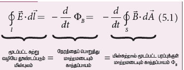
Electric field induced along a closed loop equal to variation of magnetic flux with time equal to changing magnetic flux pai B in the region enclosed by the loop
where pai B is the magnetic flux and d by dt is the total derivative with respect to time. Equation (5.1) means that the electric field E vector is induced along a closed loop by the changing magnetic flux pai B in the region encircled by the loop.
From symmetry considerations, James Clerk Maxwell showed that the change in electric field also produces a magnetic field which is given by
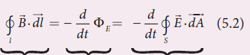
Magnetic field induced along a closed loop equal to variation of with time equal to changing electric flux pai B in the region enclosed by the loop.
where pi E is the electric flux. This is known as Maxwell’s law of induction which explains that the magnetic field row B is induced along a closed loop by the changing electric flux pai E in the region encircled by that loop. This symmetry between electric and magnetic fields explains the existence of electromagnetic waves such as radio waves, gamma rays, infrared rays etc.
Displacement current − Maxwell’s correction
In order to understand how the changing electric field induces magnetic field, let us consider a situation of charging a parallel plate capacitor which contains non−conducting medium between the plates.
Let a time−dependent current ic, called conduction current be passed through the wire to charge the capacitor.
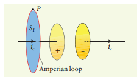
Ampere’s circuital law can be used to find the magnetic field produced around the current carrying wire.
To calculate the magnetic field at a point P near the wire and outside the capacitor, let us draw a circular Amperian loop which encloses the circular surface S one (Figure 5 point 3). Using Ampere’s circuital law for this loop, we get
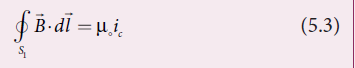
where mew not is the permeability of free space.
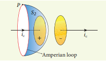
Now, the same loop is enclosed by balloon shaped surface S two such that boundaries of two surfaces S one and S two are same but the shape of the surfaces is different (Figure 5 point 4). As Ampere’s law applied for a given closed loop does not depend on the shape of the enclosing surface, the integrals should give the same answer. But by applying Ampere’s circuital law for the surface S two, we get
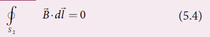
The right hand side of equation is zero because the surface S two nowhere touches the wire carrying conduction current and further, there is no current flowing between the plates of the capacitor (gap between the plates). So the magnetic field at a point P is zero. Hence there is an inconsistency between equations (5 point 3) and (5 point 4).
Maxwell resolved this inconsistency as follows: While the capacitor is being charged up, varying electric field is produced between capacitor plates. There must be a current associated with the changing electric field between capacitor plates. In other words, time−varying electric field (or time−varying electric flux) produces a current. This is known as displacement current flowing between the plates of the capacitor (Figure 5 point 5).
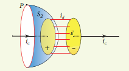
From Gauss’s law of electrostatics, the electric flux between the plates of the capacitor is
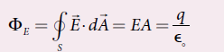
where A is the area of the plates of capacitor. The change in electric flux is given by
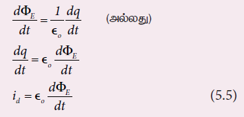
where d q by dt equal to I d t equal to idis known as displacement current or Maxwell’s displacement current. The displacement current can be defined as the current which comes into play in the region in which the electric field (or the electric flux) is changing with time. In other words, whenever the change in electric field takes place, displacement current is produced.
Maxwell modified Ampere's law as
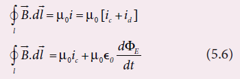
where the total current enclosed by the surface becomes the sum of conduction current and displacement current. ThereforeI equal to ic plus id The equation (5 point 6) is known as Ampere− Maxwell law. When the current in the circuit is constant, the displacement current is zero.
Between the plates, the conduction current is zero while the displacement current is non−zero. This displacement current or time−varying electric field can also produce a magnetic field between the plates of the capacitor. The magnetic field at a point inside the capacitor is perpendicular to the electric field and is shown in Figure 5 point 6. This magnetic field can be determined using equation (5 point 6).
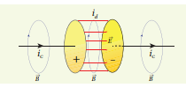
Importance of Maxwell’s correction:
Earth receives radiations from Sun and other stars. These radiations travel through empty space where there are no electric charges and hence no electric current. Ampere’s law says that only electric current can produce a magnetic field. If Ampere’s law alone is true, there will not be any radiation.
Maxwell’s correction term (mew not epsilon not d pai e by d t) in Ampere’s law ensures that time−varying electric field or displacement current can also produce a magnetic field. Though conduction current is zero in an empty space, displacement current does exist. So, the equation (5 point 6) becomes
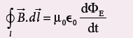
In stars, due to thermal excitation of atoms, time−varying electric field is produced which in turn, produces time− varying magnetic field. According to Faraday’s law, this time−varying magnetic field produces again time−varying electric field and so on. The coupled time−varying electric and magnetic fields travel through empty space with the speed of light and is called electromagnetic wave.
Even though Maxwell initially started with purely symmetry argument, his correction term explains one of the important aspects of the universe, namely the existence of electromagnetic waves
Note
Displacement current
The name stuck because Maxwell named it. The word displacement is poorly chosen because nothing is being displaced here
EXAMPLE 5 point 1
Consider a parallel plate capacitor which is connected to an 230 V R M S value and 50 Hertz frequency. If the separation distance between the plates of the capacitor and area of the plates are 1 millimeter and 20 centimeter square respectively. Calculate the displacement current at t equal to 1 second.
Solution
Potential difference between the plates of the capacitor,
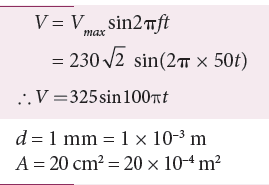
Displacement current,
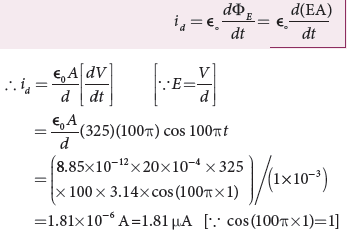
Electrodynamics can be summarized in four basic equations, known as Maxwell’s equations. These equations are analogous to Newton’s equations in mechanics. Maxwell’s equations completely explain the behaviour of charges, currents and properties of electric and magnetic fields. These equations can be written in integral form (or integration form) or derivative form (or differential form). The differential form of Maxwell’s equation is beyond higher secondary level. So we focus only the integral form of Maxwell’s equations.
First equation
It is nothing but the Gauss’s law of electricity. It relates the net electric flux to net electric charge enclosed in a surface. Mathematically, it is expressed as
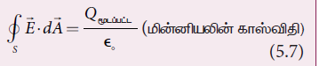
where E is the electric field and Q enclosed is the net charge enclosed by the surface S. This equation is true for both discrete and continuous distribution of charges.
It also indicates that the electric field lines start from positive charge and terminate at negative charge. This implies that the electric field lines do not form a continuous closed path. In other words, it means that an isolated positive charge or negative charge can exist.
Second equation
This law is similar to Gauss’s law for electricity. So this law can also be called as Gauss’s law for magnetism. The surface integral of magnetic field over a closed surface is zero. Mathematically,
closed integration s into b vector dot d a vector equal to zero
(guass’s law for magnetism) equation (5 point 8)
where B vector is the magnetic field. This equation implies that the magnetic lines of force form a continuous closed path. In other words, it means that no isolated magnetic monopole exists.
Third equation
It is Faraday’s law of electromagnetic induction. This law relates electric field with the changing magnetic flux which is mathematically written as
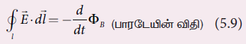
where e vector is the electric field. This equation implies that the line integral of the electric field around any closed path is equal to the rate of change of magnetic flux through the closed path bounded by the surface.
Our modern technological revolution is due to Faraday’s laws of electromagnetic induction.
Fourth equation
It is modified Ampere’s circuital law. This is also known as Ampere – Maxwell law. This law relates the magnetic field around any closed path to the conduction current and displacement current through that path.
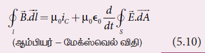
where b vector is the magnetic field. This equation shows that both conduction current and displacement current produce magnetic field.
These four equations are known as Maxwell’s equations in electrodynamics. This equation ensures the existence of electromagnetic waves. The entire communication system in the world depends on electromagnetic waves. In fact our understanding of stars, galaxy, planets excetra come by analysing the electromagnetic waves emitted by these astronomical objects
(a)
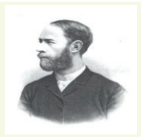
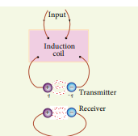
Electromagnetic waves are nonmechanical waves which move with speed equals to the speed of light (in vacuum). It is a transverse wave. In the following subsections, we discuss the production of electromagnetic waves and its properties, sources of electromagnetic waves and also classification of electromagnetic spectrum.
Production of electromagnetic waves - Hertz experiment
Maxwell’s prediction was experimentally confirmed by Heinrich Rudolf Hertz in 1888. The experimental set up used is shown in Figure 5 point 7 (b).
It consists of two metal electrodes which are made of small spherical metals. These are connected to larger spheres and the ends of them are connected to induction coil with very large number of turns. This is to produce very high electromotive force (emf).
Since the coil is maintained at very high potential, air between the electrodes gets ionized and spark (spark means discharge of electricity) is produced. This discharge of electricity affects another electrode (ring type — not completely closed) which is kept at far distance. This implies that the energy is transmitted from electrode to the receiver (ring electrode) in the form of waves, known as electromagnetic waves.
If the receiver is rotated by 90 degree, then no spark is observed by the receiver. This confirms that electromagnetic waves are transverse waves as predicted by Maxwell. Hertz detected radio waves and also computed the speed of radio waves which is equal to the speed of light (3 into 10 power 8 m s power minus 1).
Note
L, C oscillator circuit with proper setup can be used to generate radio waves whose frequency is same as frequency of L, C oscillations f equal to 1 by 2 pai L, C hertz.
Properties of electromagnetic waves
1. Electromagnetic waves are produced by any accelerated charge.
2. Electromagnetic waves do not require any medium for propagation. So electromagnetic wave is a non-mechanical wave.
3. Electromagnetic waves are transverse in nature. The oscillating electric field
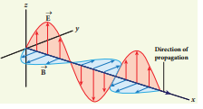
vector, oscillating magnetic field vector and propagation vector (gives direction of propagation) are mutually perpendicular to each other. For example, if the electric and magnetic fields are as shown in Figure 5.8, then the direction of propagation will be along x-direction.
4. Electromagnetic waves travel with speed which is equal to the speed of light in vacuum or free space, C equal to one by route of epsilon not into mew not equal to three into 10 power 8 m s power minus 1 where epsilon not is the permittivity of free space or vacuum and µo is the permeability of free space or vacuum (refer Unit 1 for permittivity and Unit 3 for permeability).
5. In a medium with permittivity ε and permeability µ, the speed of electromagnetic wave v is less than that in free space or vacuum (v less than c)
In a medium of refractive index,
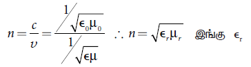
where epsilon r is the relative permittivity of the medium (also known as dielectric constant) and mew r is the relative permeability of the medium
6. Electromagnetic waves are not deflected by electric field or magnetic field.
7. Electromagnetic waves can exhibit interference, diffraction and polarization.
8. Like other waves, electromagnetic waves also carry energy, linear momentum and angular momentum.
9. If the electromagnetic wave incident on a material surface is completely absorbed, then the energy delivered is U and momentum imparted on the surface is p equal to U by c
10. If the incident electromagnetic wave of energy U is totally reflected from the surface, then the momentum delivered to the surface is del p equal to U by c minus (minus U by c) equal to 2 into U by c.
Do You Know
It is surprising to realize that E, M waves have linear momentum and angular momentum like particles. In the year 2018, Nobel prize in physics was awarded for the invention of optical tweezers and production of high intense light pulses.
• Optical tweezer is nothing but a laser light, used to move micro sized particles or molecules from one location to another location. It has a lot of applications in the medical field. The bacteria and virus can alone be separated from regular tissue using this optical tweezer and cancerous cells can be separated from normal healthy cells. The optical tweezer utilizes momentum property of E, M waves.
• In fact, the comet has tail shape because the sun light impart large amount of linear momentum which pushes the masses of the comet away from the sun
• Angular momentum of E, M waves can be understood in simple way. Consider a setup of oppositely-charged coaxial cylindrical shells and in between them a solenoid is kept. An A, C current is flowing through it and when the current in the solenoid is reduced to zero, then the inner and outer cylindrical shells start to rotate in opposite directions. The rotation of these cylinders is due to the impart of angular momentum from the electromagnetic field produced by the A, C current.
EXAMPLE 5 point 2
The relative magnetic permeability of the medium is 2 point 5 and the relative electrical permittivity of the medium is 2 point 25. Compute the refractive index of the medium.
Solution
Dielectric constant (relative permittivity of the medium), epsilon r equal to 2 point 25
Magnetic permeability, mew r equal to 2 point 5
Refractive index of the medium n equal to route of epsilon r into mew r equal to route of 2 point 25 into 2 point 5 equal to 2 point three, seven
Any stationary charge produces only electric field (refer Unit 1). When the charge moves with uniform velocity, it produces steady current which gives rise to magnetic field (not time dependent, only space dependent) around the conductor in which charge flows. If the charged particle accelerates, it produces magnetic field in addition to electric field. Both electric and magnetic fields are time varying fields. Since the electromagnetic waves are transverse waves, the direction of propagation of electromagnetic waves is perpendicular to the planes containing electric and magnetic field vectors.
Any oscillatory motion is also an accelerated motion. So, when the charge oscillates (oscillating molecular dipole) about their mean position (Figure 5 point 9), it produces electromagnetic waves.
Suppose the electromagnetic field in free space propagates along z, direction and if the electric field vector points along x-axis, then the magnetic field vector will be mutually perpendicular to both electric field and the direction of wave propagation. Thus
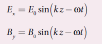
where E not and B not are amplitudes of oscillating electric and magnetic field, k is a wave number, omega is the angular frequency of the wave and k cap (unit vector, here it is called propagation vector) denotes the direction of propagation of electromagnetic wave.
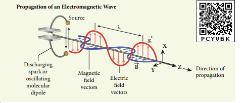
Note that both electric field and magnetic field oscillate with a frequency (frequency of electromagnetic wave) which is equal to the frequency of the source (here, oscillating charge is the source for the production of electromagnetic waves). In free space or in vacuum, the ratio between E not and B not is equal to the speed of electromagnetic wave and is equal to speed of light c.
C equal to E not by B not
In any medium, the ratio of E not and B not is equal to the speed of electromagnetic wave in that medium. Thus
V equal to E not by B not less than c
Further, the energy of electromagnetic waves comes from the energy of the oscillating charge.
EXAMPLE 5 point 3
Compute the speed of the electromagnetic wave in a medium if the amplitude of electric and magnetic fields are 3 into 10 power 4 N C power minus 1 and 2 into 10 power minus 4 T, respectively.
Solution
The amplitude of the electric field, E not equal to 3 into 10 power 4 NC power minus 1
he amplitude of the magnetic field, B not equal to 2 into 10 power minus 4 Tesla.
Therefore, speed of the electromagnetic wave in that medium is
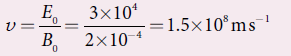
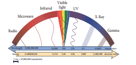
Electromagnetic spectrum is an orderly distribution of electromagnetic waves in terms of wavelength or frequency (Figure 5 point 10).
Radio waves
They are produced by accelerated motion of charges in conducting wires. The frequency range is from a few hertz to 10 power 9 hertz. They show reflection and diffraction.
They are used in radio and television communication systems and also in cellular phones to transmit voice communication in the ultra high frequency band.
Microwaves
It is produced by special vacuum tubes such as klystron, magnetron and gunndiode. The frequency range of microwaves is 10 power 9 Hertz to 10 power 11 Hertz. These waves undergo reflection and can be polarised.
It is used in radar system for aircraft navigation, speed of the vehicle, microwave oven for cooking and very long distance wireless communication through satellites.
Infrared radiation
It is produced by hot bodies (also known as heat waves) and also by when the molecules undergoing rotational and vibrational transitions. The frequency range is 10 power 11 Hertz to 4 into 10 power 14 Hertz.
It provides electrical energy to satellites by means of solar cells. It is used to produce dehydrated fruits, in green houses to keep the plants warm, heat therapy for muscular pain or sprain, TV remote as a signal carrier, to look through haze fog or mist and used in night vision or infrared photography.
Activity
Measuring the speed of light using the microwave oven Nowadays the microwave oven is very commonly used to heat the food items. Micro waves of wavelengths 1 mm to 30 cm are produced in these ovens. Such waves form the standing waves between the interior walls of the oven. It is interesting to note that the speed of light can be measured using micro wave oven.
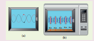
We studied about the standing waves in eleventh physics, Volume 2, Unit 11. The standing waves have nodes and antinodes at fixed points. At node point, the amplitude of the wave is zero and at antinodes point, the amplitude is maximum. In other words, the maximal energy of microwaves is located at antinode points. When we keep some food items like chappathi or choclate (after removing the rotating platform) inside the oven, we can notice that at antinode locations, chappathi will be burnt more than other locations. It is shown in the Figure (c) and (d). The distance between two successive burnt spots will give the half wavelength of microwave. The frequency of microwave is printed in the panel of oven. By knowing wavelength and frequency of microwaves, using the formula v lambda equal to c, we can calculate the speed of light c.
Visible light
It is produced by incandescent bodies and also it is radiated by excited atoms in gases. The frequency range is from 4 into 10 power 14 Hertz to 8 into 10 power 14 Hertz
It obeys the laws of reflection and refraction. It undergoes interference, diffraction and can be polarised. It exhibits photo-electric effect also. It can be used to study the structure of molecules, arrangement of electrons in external shells of atoms. It causes sensation of vision.
Ultraviolet radiation
It is produced by Sun, arc and ionized gases. Its frequency range is from 8 into 10 power 14 Hertz to 10 power 17 Hertz.
It has less penetrating power. It can be absorbed by atmospheric ozone and is harmful to human body. It is used to destroy bacteria in sterilizing the surgical instruments, burglar alarm, to detect the invisible writing, finger prints and also in the study of atomic structure.
X rays
It is produced when there is sudden stopping of high speed electrons at high atomic number target, and also by electronic transitions among the innermost orbits of atoms. The frequency range of X rays is from 10 power 17 Hertz to 10 power 19 Hertz. X rays have more penetrating power than ultraviolet radiation.
X rays are used extensively in studying structures of inner atomic electron shells and crystal structures. It is used in detecting fractures, diseased organs, formation of bones and stones, observing the progress of healing bones. Further, in a finished metal product, it is used to detect faults, cracks, flaws and holes.
Gamma rays
It is produced by transitions of radioactive nuclei and decay of certain elementary particles. They produce chemical reactions on photographic plates, fluorescence, ionisation, diffraction. The frequency range is 10 power 18 Hertz and above. Gamma rays have higher penetrating power than X rays and ultraviolet radiations; it has no charge but harmful to human body. Gamma rays provide information about the structure of atomic nuclei. It is used in radio therapy for the treatment of cancer and tumour, in food industry to kill pathogenic microorganism.
EXAMPLE 5 point 4
A magnetron in a microwave oven emits electromagnetic waves (e m waves) with frequency f equal to 2450 Mega Hertz. What magnetic field strength is required for electrons to move in circular paths with this frequency?
Solution
Frequency of the electromagnetic waves given, f equal to 2450 Mega Hertz
The corresponding angular frequency is
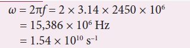
The required magnetic field, B equal to m, e, omega divided by modulus q
Mass of the electron, m e equal to 9.11 into 10 power minus 31 kilogram
Charge of the electron,
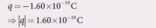
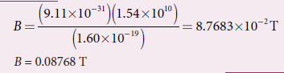
This magnetic field can be easily produced with a permanent magnet. So, electromagnetic waves of frequency 2450 Mega Hertz can be used for heating and cooking food because they are strongly absorbed by water molecules.
When an object burns, it emits radiations. That is, it emits electromagnetic radiation which depends on temperature. If the object becomes hot, it glows in red colour. If the temperature of the object is further increased, then it glows in reddish orange colour and becomes white when it is hottest. The spectrum in Figure 5 point 11 usually is called black body spectrum (Refer eleventh Physics Unit 8). It is a continuous frequency (or wavelength) curve depending on the body’s temperature.
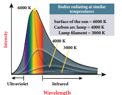
Suppose we allow a beam of white light to pass through the prism (as shown in Figure 5 point 12). It is split into its seven constituent colours which can be viewed on the screen as continuous spectrum. This phenomenon is known as dispersion of light and the definite pattern of colours obtained on the screen after dispersion is called as spectrum. The spectra can be broadly classified into two catagories:
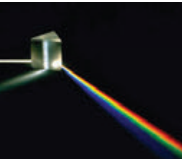
(a) Emission spectra
When the spectrum of self luminous source is taken, we get emission spectrum. Each source has its own characteristic emission spectrum. The emission spectrum can be divided into three types:
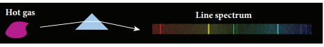
Continuous emission spectrum (or continuous spectrum)
If the light from incandescent lamp (filament bulb) is allowed to pass through prism (simplest spectroscope), it splits up into seven colours. Thus, it consists of wavelengths containing all the visible colours ranging from violet to red (Figure 5 point 13). Examples: spectrum obtained from carbon arc and incandescent solids.
Line emission spectrum (or line spectrum):
Suppose light from hot gas is allowed to pass through prism, line spectrum is observed (Figure 5 point 14). Line spectra are also known as discontinuous spectra. The line spectra consists of sharp lines of definite wavelengths or frequencies. Such spectra arise due to excited atoms of elements. These lines are the characteristics of the element and are different for different elements. Examples: spectra of atomic hydrogen, helium, excetra.
Band emission spectrum (or band spectrum)
Band spectrum consists of several number of very closely spaced spectral lines which overlap together forming specific bands which are separated by dark spaces. This spectrum has a sharp edge at one end and fades out at the other end. Such spectra arise when the molecules are excited. Band spectrum is the characteristic of the molecule and hence the structure of the molecules can be studied using their band spectra. Example: spectra of ammonia gas in the discharge tube etc.
Absorption spectra
When light is allowed to pass through a medium or an absorbing substance then the spectrum obtained is known as absorption spectrum. It is the characteristic of absorbing substance. Absorption spectrum is classified into three types:
Continuous absorption spectrum
When we pass white light through a blue glass plate, it absorbs all the colours except blue and gives continuous absorption spectrum
Line absorption spectrum
When light from the incandescent lamp is passed through cold gas (medium), the spectrum obtained through the dispersion due to prism is line absorption spectrum (Figure 5 point 15). Similarly, if the light from the carbon arc is made to pass through sodium vapour, a continuous spectrum of carbon arc with two dark lines in the yellow region are obtained.
Band absorption spectrum
When white light is passed through the iodine vapour, dark bands on continuous bright background is obtained. This type of band is also obtained when white light is passed through diluted solution of blood or chlorophyll or through certain solutions of organic and inorganic compounds
Fraunhofer lines
When the spectrum obtained from the Sun is examined, it consists of large number of dark lines (line absorption spectrum). These dark lines in the solar spectrum are known as Fraunhofer lines (Figure 5 point 16). The absorption spectra for various materials are compared with the Fraunhofer lines in the solar spectrum, which helps in identifying elements present in the Sun’s atmosphere.
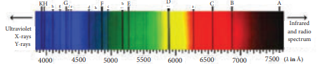
closed integral into b vector dot dl vector equal to mew not I equal to mew not into I c plus I d
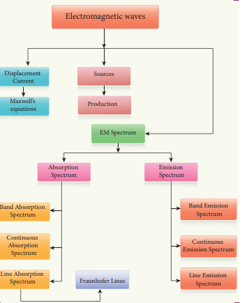
1 Multiple choice questions
1. The dimension of one by mew not into epsilon not is
(a) L T power minus 1
(b) L square into t power minus 2
(c) L power minus 1 into T
(d) L power minus 2 into t square
Answer: (b) L square into t power minus 2
2. If the amplitude of the magnetic field is 3 into 10 power 6 T, then amplitude of the electric field for a electromagnetic waves is
(a) 100 V m power minus 1
(b) 300 V m power minus 1
(c) 600 V m power minus 1
(d) 900 V m power minus 1
Answer: (d) 900 V m power minus 1
3. Which of the following electromagnetic radiations is used for viewing objects through fog
(a) microwave
(b) gamma rays
(c) X rays
(d) infrared
Answer: (d) infrared
4. Which of the following is false for electromagnetic waves
(a) transverse
(b) non-mechanical waves
(c) longitudinal
(d) produced by accelerating charges
Answer: (c) longitudinal
5. Consider an oscillator which has a charged particle oscillating about its mean position with a frequency of 300 Mega Hertz. The wavelength of electromagnetic waves produced by this oscillator is
(a) 1 m
(b) 10 m
(c) 100 m
(d) 1000 m
Answer: (a) 1 m
6.The electric and the magnetic fields, associated with an electromagnetic wave, propagating along negative X axis can be represented by
(a) E vector equal to e not j cap and b vector equal to b not k cap
(b) E vector equal to e not k cap and b vector equal to b not j cap
(c) E vector equal to e not I cap and b vector b not j cap
(d) E vector equal to e not j cap and b vector equal to b not j cap
Answer: (b) E vector equal to e not k cap and b vector equal to b not j cap
7. In an electromagnetic wave travelling in free space the rms value of the electric field is 3 V m power minus 1. The peak value of the magnetic field is
(a) 1.414 into 10 power minus 8 T
(b) 1.0 into 10 power minus 8 T
(c) 2.828 into 10 power minus 8 T
(d) 2.0 into 10 power minus 8 T
Answer: (a) 1.414 into 10 power minus 8 T
8. An electromagnetic wave is propagating in a medium with a velocity v vector equal to v I cap .The instantaneous oscillating electric field of this electromagnetic wave is along plus y-axis, then the direction of oscillating magnetic field of the electromagnetic. wave will be along:
(a) minus y direction
(b) minus x direction
(c) plus z, direction
(d) minus z, direction
Answer: (c) plus z direction
9. If the magnetic monopole exists, then which of the Maxwell’s equation to be modified?.
(a) closed integral s into E vector dot D A vector equal to Q enclosed divided by epsilon not
(b) Closed integral s into B vector dot d A vector equal to zero
(c) Closed integral l, into B vector dot d l vector equal to mew not into I c plus mew not into epsilon not into d by d t into closed integral E vector dot d A vector
(d) Closed integral l into E vector dot d l vector equal to minus d divided by d t into pai B
Answer: (b) Closed integral; into B vector dot d A vector equal to zero
10. Fraunhofer lines are an example of dash spectrum.
(a) line emission
(b) line absorption
(c) band emission
(d) band absorption
Answer: (b) line absorption
11. Which of the following is an electromagnetic wave?
(a) alpha rays
(b) beeta rays
(c) gaama rays
(d) all of them
Answer: (c) gaama rays
12. Which one of them is used to produce a propagating electromagnetic wave?
(a) an accelerating charge
(b) a charge moving with constant velocity
(c) a stationary charge
(d) an uncharged particle
Answer: (a) an accelerating charge
13. If be the electric field of a plane electromagnetic wave, the value of ω is
(a) 0.3 into 10 power minus 14 rad s power minus 1
(b) 3 into 10 power minus 14 rad s power minus 1
(c) 0.3 into 10 power minus 14 rad s power minus 1
(d) 3 into 10 power minus 14 rad s power minus 1
Answer: (d) 3 into 10 power minus 14 rad s power minus 1
14. Which of the following is NOT true for electromagnetic waves?
(a) it transports energy
(b) it transports momentum
(c) it transports angular momentum
(d) in vacuum, it travels with different speeds which depend on their frequency
Answer: (d) in vacuum, it travels with different speeds which depend on their frequency
15. The electric and magnetic fields of an electromagnetic wave are
(a) in phase and perpendicular to each other
(b) out of phase and not perpendicular to each other
(c) in phase and not perpendicular to each other
(d) out of phase and perpendicular to each other
Answer: (a) in phase and perpendicular to each other
2 Short answer questions
1. What is displacement current?
2. What are electromagnetic waves?
3. Write down the integral form of modified Ampere’s circuital law.
4. Write notes on Gauss' law in magnetism.
5. Give two uses each of (1) I R radiation, (2) Microwaves and (3) U V radiation.
6. What are Fraunhofer lines? How are they useful in the identification of elements present in the Sun?
7. Write notes on Ampere-Maxwell law.
8. Why are e. m. waves non-mechanical?
3 Long answer questions
1. Write down Maxwell equations in integral form.
2. Write short notes on (a) microwave (b) X-ray (c) radio waves (d) visible spectrum
3. Discuss the Hertz experiment.
4. Explain the Maxwell’s modification of Ampere’s circuital law.
5. Explain the importance of Maxwell’s correction.
6. Write down the properties of electromagnetic waves.
7. Discuss the source of electromagnetic waves.
8. Explain the types of emission spectrum.
9. Explain the types of absorption spectrum.
4 Numerical problems
1. Consider a parallel plate capacitor whose plates are closely spaced. Let R be the radius of the plates and the current in the wire connected to the plates is 5 A, calculate the displacement current through the surface passing between the plates by directly calculating the rate of change of flux of electric field through the surface.
Answer: I d equal to I c equal to 5 A
2. A transmitter consists of L C circuit with an inductance of 1 mew H and a capacitance of 1 mew F. What is the wavelength of the electromagnetic waves it emits?
Answer: 18.84 into 10 power 2 meter
3. A pulse of light of duration 10 power minus 6 s is absorbed completely by a small object initially at rest. If the power of the pulse is 60 into 10 power minus 3 W, calculate the final momentum of the object.
Answer: 20 into 10 power minus 17 kg m s power minus 1
4. Let an electromagnetic wave propagate along the x - direction, the magnetic field oscillates at a frequency of 10 power 10 Hertz and has an amplitude of 10 power minus 5 T, acting along the y - direction. Then, compute the wavelength of the wave. Also write down the expression for electric field in this case.
Answer: lemda equal to 3 into 10 power minus 2 m and e vector into x, t equal to 3 into 10 power 3 sin into 2.09 into 10 power 2 x minus 6.28 into 10 power 10 t into minus k cap into n c power minus 1.
5. If the relative permeability and relative permittivity of a medium are 1.0 and 2.25 respectively, find the speed of the electromagnetic wave in this medium.
Answer: v equal to 2 into 10power 8m s power minus 1
1. H, C. Verma, Concepts of Physics – Volume 2, Bharati Bhawan Publisher.
2. Halliday, Resnick and Walker, Fundamentals of Physics, Wiley Publishers, 10th edition.
3. Serway and Jewett, Physics for scientist and engineers with modern physics, Brook/Coole publishers, Eighth edition.
4. David J. Griffiths, Introduction to electrodynamics, Pearson publishers.
5. Paul Tipler and Gene Mosca, Physics for scientist and engineers with modern physics, Sixth edition, W, H, Freeman and Company.
ICT CORNER
Electromagnetic waves
In this activity you will be able to how do microwaves heat food?
Physics of microwaves and heating food
STEPS:
• Open the browser and type “phet.colorado.edu/en/simulation/microwaves” in the address bar. Run the simulation.
• select ‘one molecule’ tab. Turn on the microwave using the button in the right control panel. The arrows indicate the strength and direction of the force that would be exerted by the micro wave on the water molecules present in food. Observe the response of water molecule in response to this force?
• Observe how do microwaves heat food by rotating water molecule?
• Change amplitude and frequency of microwave and discuss how fast the water molecules are rotating?
Note:
Install Java application if it is not in your system. You can download all the phet simulation and works in off line from https://phet.colorado.edu/en/offline-access.
URL:
https://phet.colorado.edu/en/simulation/microwaves
* Pictures are indicative only.
* If browser requires, allow Flash Player or Java Script to load the page.